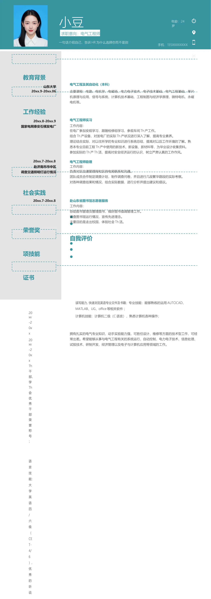

教育背景
山东大学
电气工程及其自动化（本科）
20xx.9-20xx.06
工作经验
20xx.8-20xx.9
国家电网泰安石横发电厂
主要课程：电路、电机学、电磁场、电力电子技术、电子技术基础、电气工程基础、单片
机原理与应用、信号与系统、计算机技术基础、工程制图与经济学原理、微特电机、永磁
电机等。
电气工程师实习
工作内容：
在电厂参加安规学习，跟随检修组学习、参观车间Th 产工作。
结合Th 产设备，对发电厂的实际Th 产状况进行深入了解，提高专业素养。
理论结合实际，对以往所学的专业知识进行系统总结，提高对以后工作环境的了解。
熟
悉本专业目前工程Th 产中使用的新技术、新设备、新材料等，为毕业设计收集资料。
参加实际的Th 产Th 活，提高对安全经济运行的认识，树立严肃认真的工作作风。
20xx.7-20xx.8
赴济南市市中区
调查交通照明灯运行情况
社会实践
电气工程师助理
工作内容：
负责对区交通管理局和区供电局联系和沟通。
团队成员合作制定调查计划，制作调查问卷，并且进行几段繁华路段的实际考察。
对各种调查结果和情况，结合实际数据，进行分析并提出建议和倡议。
20xx.7-20xx.8
赴山东省图书馆志愿者服务
工作内容：
协助图书管理员整理图书，做好图书借调管理工作。
调查图书馆运行情况，宣传先进理念。
主要目的是走出校园，体验社会Th 活。
荣誉奖
项技能
证书
自我评价
小豆
求职意向：电气工程师
一句话介绍自己，告诉HR 为什么选择你而不是别
年龄：24
岁
手机：135XXXXXXXX
邮箱：123456@xx.com
20
xx
-2
0x
x
20
xx
-2
0x
x
Th
干
部、
学
Th
会
优
秀
干
部
荣
誉
称
号
；
语
言
技
能：
大
学
英
语
四
/
六
级
（
CE
T-
4/
6
）,
优
秀
的
听
说
读写能力,
快速浏览英语专业文件及书籍；
专业技能：能够熟练的运用AUTOCAD、
MA
TL
AB、UG、office 等相关软件 ；
计算机技能：计算机二级（C 语言），熟悉计算机各种操作；
拥有扎实的电气专业知识，动手实验能力强，可胜任设计、维修等方面的技术型工作，可经
常出差。希望能够从事与电气工程有关的系统运行、自动控制、电力电子技术、信息处理、
试验技术、研制开发、经济管理以及电子与计算机应用等领域的工作。